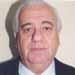

|
 |
Función / Cargo:
Secretario General y Delegado Titular ante la A.U.F.
Nombre: José Carlos
Apellido: Domínguez Cuevas
Lugar de nac.: Montevideo
Fecha de nac.: 03/10/1945
Ocupación: Secretario Representante Nacional - Farmacéutico |

|
Datos Adicionales
- 1980/2000 Audiciones Radiales "La Voz Peñarolense"
y "La Voz de Peñarol.
- 1992/2000 Programa de televisión "La Vida por
Peñarol"
- 1997/2000 "Peñarol Verdad" (audición
oficial de Peñarol)
- 1979 Comisión de Boxeo
- 1980/1992 Integrante Asamblea Representativa de Peñarol
- 1985/1986 Delegado Torneo "Copa de Oro de los Grandes"
- 1985/1988 RR.PP. Consejo Directivo
- 1990/1991 Secretario General Comisión de Festejos
de los Cien Años de Peñarol
- 1989/1990 Consejero (Consejo Directivo)
- 1993/1994 Secretario General (Consejo Directivo)
- 1995/1996 Consejero (Consejo Directivo)
1997/2000 Secretario General (Consejo Directivo) y delegado
ante la AUF
- Secretario General- Dirigente del Quinquenio
- Campeón Uruguayo 1993- 1994- 1995- 1996- 1997
- Historiador del Club Atlético Peñarol.
- Publicaciones: 1981/1985 "La Voz Peñarolense"
(II Tomos)
- 1987 Historia del C. A. Peñarol (Ediciones Elcar)
- 1991 Colaborador del Libro de Oro por Franklin Morales
- 1995/1996 Apuntes colaboración libro "Hijos Nuestros"
(2 tomos) del profesor Gutiérrez Cortinas
- 1997 "La Guerra del Quinquenio" (Impresora Polo)
- 2000 "Los presidentes" 109 años de historia
(Impr. Psicográfica Ltda.)
- 2000 Redactor histórico del semanario "Peñarol
Verdad"
- 1990/2000 Realización de cinco videos Historia del
C. A. Peñarol.
|
|
|
|